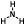
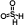
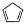

|
|
Main Window — Fragments Toolbar |
This toolbar provides a limited selection of structural fragments. These fragments can be added to the Workspace in Place mode. The intention is that you build with these fragments to create the basic molecular framework, then change elements to introduce heteroatoms. A few specialized fragments with heteroatoms are provided, such as a planar amine fragment, which is useful for building amides. The fragment names are displayed in tooltips. For a more complete set of fragments, open the Build panel at the Fragments tab.
The ring fragments can be attached in two ways: connection or fusion. When you click a ring button, the picking cursor is labeled A|B, to indicate that you can pick either an atom or a bond. If you pick an atom, the ring fragment is connected by replacing that atom with the ring ("connection"). If you pick a bond, the ring fragment is connected by replacing that bond with a bond in the ring ("fusion").
| Hydroxyl Place hydroxyl fragment in the Workspace. |
|
|  | Planar Amine Place planar amine fragment in the Workspace. |
|  | Sulfone Place sulfone fragment in the Workspace. |
| Carbonyl Place carbonyl fragment in the Workspace. |
|
 |
Methyl Place methyl fragment in the Workspace. |
| Cyclopropyl Place cyclopropyl fragment in the Workspace. |
|
| Cyclobutyl Place cyclobutyl fragment in the Workspace. |
|
| Cyclopentyl Place cyclopentyl fragment in the Workspace. |
|
| Cyclohexyl Place cyclohexyl fragment in the Workspace. |
|
| Phenyl Place phenyl fragment in the Workspace. |
|
|  | Cyclopentadienyl Place cyclopentadienyl fragment in the Workspace. |
| Cycloheptane Place cycloheptyl fragment in the Workspace. |
|
| Fragments... Open the Build panel at the Fragments tab. |
|
| Metal center Place a metal center of a given coordination geometry in the Workspace. Click and hold to choose the coordination geometry from the button menu, then click in the Workspace to place the metal center. The available geometries cover a range from one- to sixteen-coordinate. |
|